CODING AGENTS AS PIXEL WORLD MODELS
traex/DeepSeek-V4.1-Flash · 0165
点击播放 · 原生 RGB 像素
逐轮保存的候选
回放视频、检查图与代码变化。
每份候选均可单独播放。实际图片检查记录在下方工具轨迹中。
候选 01播放与检查图
点击播放 · 原生 RGB 像素
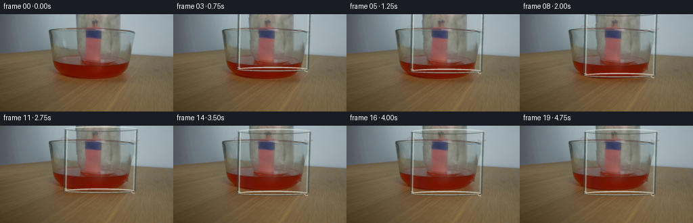
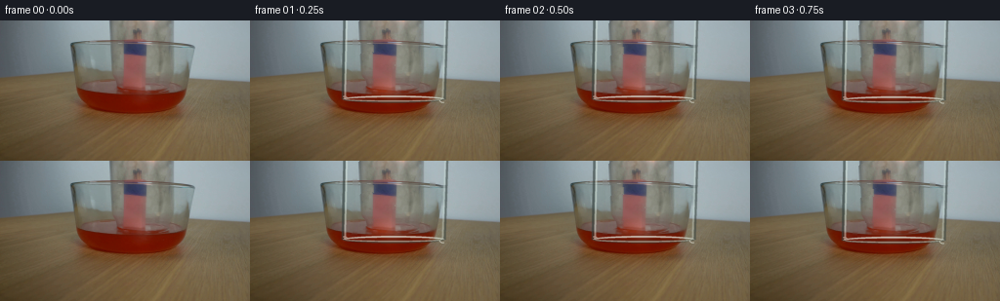
展开代码变化
--- 上一保存版本
+++ 本次保存版本
@@ -0,0 +1,249 @@
+from pathlib import Path
+
+import numpy as np
+from PIL import Image, ImageDraw, ImageFilter
+
+import artifact_io
+
+
+W, H, N, FPS = 256, 144, 20, 4
+HERE = Path(__file__).resolve().parent
+
+
+def _clean_plate(image):
+ """Remove the stationary glass edges so the jar can move independently."""
+ plate = image.astype(np.float32)
+
+ # Narrow side strips: blend between the pixels immediately outside each edge.
+ for y in range(0, 84):
+ for x0, x1, a, b in ((94, 99, 92, 101), (197, 203, 196, 204)):
+ left = image[y, a].astype(np.float32)
+ right = image[y, b].astype(np.float32)
+ for x in range(x0, x1):
+ t = (x - x0 + 1) / (x1 - x0 + 1)
+ plate[y, x] = left * (1.0 - t) + right * t
+
+ # The old lower rim crosses the liquid in a shallow four-pixel band.
+ for x in range(92, 205):
+ upper = image[76, x].astype(np.float32)
+ lower = image[85, x].astype(np.float32)
+ for y in range(78, 83):
+ t = (y - 77) / 9.0
+ plate[y, x] = upper * (1.0 - t) + lower * t
+
+ # Suppress the faint old vertical reflections without flattening the scene.
+ soft = np.asarray(
+ Image.fromarray(np.clip(plate, 0, 255).astype(np.uint8)).filter(
+ ImageFilter.GaussianBlur(1.2)
+ ),
+ dtype=np.float32,
+ )
+ for x0, x1 in ((105, 111), (184, 190)):
+ plate[8:77, x0:x1] = plate[8:77, x0:x1] * 0.35 + soft[8:77, x0:x1] * 0.65
+
+ return np.clip(plate, 0, 255)
+
+
+def _jar_geometry(bottom):
+ top = bottom - 92.0
+
+ def edges(y):
+ t = np.clip((y - top) / 92.0, 0.0, 1.0)
+ return 97.0 - 2.0 * t, 202.0 - 3.0 * t
+
+ return top, edges
+
+
+def _refract(base, bottom, frame):
+ """Add restrained, moving optical distortion inside the glass body."""
+ top, edges = _jar_geometry(bottom)
+ out = base.copy()
+ y0 = max(0, int(np.floor(top)))
+ y1 = min(H, int(np.ceil(bottom + 4)))
+ yy, xx = np.mgrid[y0:y1, 0:W]
+ xl = np.empty_like(yy, dtype=np.float32)
+ xr = np.empty_like(yy, dtype=np.float32)
+ for row in range(yy.shape[0]):
+ xl[row, :], xr[row, :] = edges(yy[row, 0])
+ inside = (xx >= xl) & (xx <= xr)
+ u = np.clip((xx - xl) / np.maximum(xr - xl, 1), 0.0, 1.0)
+ phase = frame * 0.36
+ shift = (
+ 0.55 * np.sin(np.pi * u)
+ + 0.32 * np.sin(2.0 * np.pi * u + 0.7)
+ + 0.16 * np.sin(yy * 0.18 - phase)
+ )
+ sample_x = np.clip(np.rint(xx + shift).astype(np.int32), 0, W - 1)
+ warped = out[y0:y1]
+ warped[inside] = warped[yy[inside] - y0, sample_x[inside]]
+ out[y0:y1] = warped
+ return out
+
+
+def _warm_glow(image, frame, cover):
+ """Faint ember response around the match heads, strongest before covering."""
+ out = image.astype(np.float32)
+ yy, xx = np.mgrid[0:H, 0:W]
+ strength = 0.10 * (1.0 - 0.75 * cover) * (0.75 + 0.25 * np.sin(frame * 1.4))
+ glow = np.exp(-(((xx - 135.0) / 13.0) ** 2 + ((yy - 71.0) / 7.0) ** 2))
+ color = np.array([255.0, 105.0, 28.0], dtype=np.float32)
+ out += glow[:, :, None] * color * strength
+ return np.clip(out, 0, 255)
+
+
+def _draw_glass(image, bottom, submersion):
+ scale = 4
+ canvas = Image.new("RGBA", (W * scale, H * scale), (0, 0, 0, 0))
+ draw = ImageDraw.Draw(canvas)
+ top, edges = _jar_geometry(bottom)
+
+ # Broad, soft glass reflections.
+ soft = Image.new("RGBA", canvas.size, (0, 0, 0, 0))
+ sd = ImageDraw.Draw(soft)
+ for y in range(max(0, int(top)), min(H, int(bottom + 3)), 2):
+ xl, xr = edges(y)
+ if 0 <= xl < W and 0 <= xr < W:
+ x = (xl + 0.16 * (xr - xl)) * scale
+ sd.line(
+ [(x, y * scale), (x + 2.5 * scale, y * scale)],
+ fill=(225, 239, 230, 35),
+ width=7 * scale,
+ )
+ x2 = (xl + 0.79 * (xr - xl)) * scale
+ sd.line(
+ [(x2, y * scale), (x2 + 1.5 * scale, y * scale)],
+ fill=(72, 88, 82, 24),
+ width=8 * scale,
+ )
+ soft = soft.filter(ImageFilter.GaussianBlur(4.0 * scale))
+ canvas = Image.alpha_composite(canvas, soft)
+ draw = ImageDraw.Draw(canvas)
+
+ # Side walls, with a dark outer contour and a cool inner glint.
+ left_pts, right_pts = [], []
+ for y in range(max(0, int(top + 2)), min(H, int(bottom + 3))):
+ xl, xr = edges(y)
+ left_pts.append((xl * scale, y * scale))
+ right_pts.append((xr * scale, y * scale))
+ if len(left_pts) > 2:
+ draw.line(left_pts, fill=(53, 65, 61, 150), width=3 * scale, joint="curve")
+ draw.line(
+ [(x + 2.2 * scale, y) for x, y in left_pts],
+ fill=(222, 236, 226, 110),
+ width=2 * scale,
+ joint="curve",
+ )
+ draw.line(right_pts, fill=(55, 67, 62, 135), width=3 * scale, joint="curve")
+ draw.line(
+ [(x - 1.8 * scale, y) for x, y in right_pts],
+ fill=(205, 222, 214, 85),
+ width=2 * scale,
+ joint="curve",
+ )
+
+ # Open top rim enters the frame as the jar descends.
+ if top > -8:
+ cx = 149.5
+ bbox = [
+ (cx - 53.5) * scale,
+ (top - 2.5) * scale,
+ (cx + 53.5) * scale,
+ (top + 6.0) * scale,
+ ]
+ draw.arc(bbox, 180, 360, fill=(218, 231, 223, 155), width=2 * scale)
+ draw.arc(bbox, 2, 178, fill=(65, 77, 71, 115), width=2 * scale)
+
+ # Thick lower rim and front bead.
+ xl, xr = edges(bottom)
+ cx = (xl + xr) * 0.5
+ rx = (xr - xl) * 0.5
+ bbox = [(cx - rx) * scale, (bottom - 2.5) * scale, (cx + rx) * scale, (bottom + 5.0) * scale]
+ draw.arc(bbox, 180, 360, fill=(225, 235, 226, 175), width=2 * scale)
+ draw.arc(bbox, 0, 180, fill=(67, 76, 69, 175), width=3 * scale)
+ draw.arc(
+ [(cx - rx + 2) * scale, (bottom - 1.0) * scale, (cx + rx - 2) * scale, (bottom + 3.7) * scale],
+ 8,
+ 172,
+ fill=(237, 242, 229, 145),
+ width=1 * scale,
+ )
+
+ # A small elliptical contact glint at each lower corner.
+ for x, sign in ((xl + 1.5, 1), (xr - 1.5, -1)):
+ draw.arc(
+ [(x - 4) * scale, (bottom - 2) * scale, (x + 4) * scale, (bottom + 5) * scale],
+ 250 if sign > 0 else 70,
+ 350 if sign > 0 else 170,
+ fill=(236, 244, 232, 145),
+ width=1 * scale,
+ )
+
+ overlay = np.asarray(
+ canvas.resize((W, H), Image.Resampling.LANCZOS), dtype=np.float32
+ )
+ alpha = overlay[:, :, 3:4] / 255.0
+ rgb = overlay[:, :, :3]
+ out = image.astype(np.float32) * (1.0 - alpha) + rgb * alpha
+
+ # Faint volume tint, stronger near the glass walls.
+ yy, xx = np.mgrid[0:H, 0:W]
+ xl_grid = np.empty((H, W), dtype=np.float32)
+ xr_grid = np.empty((H, W), dtype=np.float32)
+ for y in range(H):
+ a, b = edges(y)
+ xl_grid[y, :] = a
+ xr_grid[y, :] = b
+ inside = (yy >= top) & (yy <= bottom + 3) & (xx >= xl_grid) & (xx <= xr_grid)
+ u = np.clip((xx - xl_grid) / np.maximum(xr_grid - xl_grid, 1), 0, 1)
+ tint_alpha = (
+ 0.018
+ + 0.045 * np.exp(-((u - 0.045) / 0.055) ** 2)
+ + 0.025 * np.exp(-((u - 0.955) / 0.06) ** 2)
+ ) * inside
+ tint = np.array([184.0, 201.0, 192.0], dtype=np.float32)
+ out = out * (1.0 - tint_alpha[:, :, None]) + tint * tint_alpha[:, :, None]
+
+ # Water gathers around the glass where it enters the red liquid.
+ if submersion > 0:
+ rip = Image.new("RGBA", canvas.size, (0, 0, 0, 0))
+ rd = ImageDraw.Draw(rip)
+ y = 80.0
+ for side in (-1, 1):
+ x = (edges(y)[0] if side < 0 else edges(y)[1]) * scale
+ rd.arc(
+ [(x - 6 * scale), (y - 3 * scale), (x + 6 * scale), (y + 4 * scale)],
+ 185 if side < 0 else 355,
+ 355 if side < 0 else 165,
+ fill=(244, 104, 67, int(80 * submersion)),
+ width=1 * scale,
+ )
+ rip = rip.filter(ImageFilter.GaussianBlur(0.45 * scale))
+ ro = np.asarray(rip.resize((W, H), Image.Resampling.LANCZOS), dtype=np.float32)
+ ra = ro[:, :, 3:4] / 255.0
+ out = out * (1.0 - ra) + ro[:, :, :3] * ra
+
+ return np.clip(out, 0, 255)
+
+
+def generate():
+ source = np.asarray(Image.open(HERE / "first_frame.png").convert("RGB"), dtype=np.uint8)
+ plate = _clean_plate(source)
+ frames = np.empty((N, H, W, 3), dtype=np.uint8)
+ frames[0] = source
+
+ for frame in range(1, N):
+ t = np.clip((frame - 1) / 14.0, 0.0, 1.0)
+ eased = 0.5 - 0.5 * np.cos(np.pi * t)
+ bottom = 79.5 + 19.5 * eased
+ submersion = np.clip((bottom - 79.0) / 8.0, 0.0, 1.0)
+
+ image = _refract(plate, bottom, frame)
+ image = _warm_glow(image, frame, submersion)
+ image = _draw_glass(image, bottom, submersion)
+ frames[frame] = np.clip(np.rint(image), 0, 255).astype(np.uint8)
+
+ artifact_io.save(frames, HERE)
+
+
+if __name__ == "__main__":
+ generate()
候选 02播放与检查图
点击播放 · 原生 RGB 像素

展开代码变化
--- 上一保存版本
+++ 本次保存版本
@@ -10,236 +10,201 @@
HERE = Path(__file__).resolve().parent
-def _clean_plate(image):
- """Remove the stationary glass edges so the jar can move independently."""
- plate = image.astype(np.float32)
-
- # Narrow side strips: blend between the pixels immediately outside each edge.
- for y in range(0, 84):
- for x0, x1, a, b in ((94, 99, 92, 101), (197, 203, 196, 204)):
- left = image[y, a].astype(np.float32)
- right = image[y, b].astype(np.float32)
- for x in range(x0, x1):
- t = (x - x0 + 1) / (x1 - x0 + 1)
- plate[y, x] = left * (1.0 - t) + right * t
-
- # The old lower rim crosses the liquid in a shallow four-pixel band.
- for x in range(92, 205):
- upper = image[76, x].astype(np.float32)
- lower = image[85, x].astype(np.float32)
- for y in range(78, 83):
- t = (y - 77) / 9.0
- plate[y, x] = upper * (1.0 - t) + lower * t
-
- # Suppress the faint old vertical reflections without flattening the scene.
- soft = np.asarray(
- Image.fromarray(np.clip(plate, 0, 255).astype(np.uint8)).filter(
- ImageFilter.GaussianBlur(1.2)
- ),
- dtype=np.float32,
- )
- for x0, x1 in ((105, 111), (184, 190)):
- plate[8:77, x0:x1] = plate[8:77, x0:x1] * 0.35 + soft[8:77, x0:x1] * 0.65
-
- return np.clip(plate, 0, 255)
-
-
-def _jar_geometry(bottom):
- top = bottom - 92.0
-
- def edges(y):
- t = np.clip((y - top) / 92.0, 0.0, 1.0)
- return 97.0 - 2.0 * t, 202.0 - 3.0 * t
-
- return top, edges
-
-
-def _refract(base, bottom, frame):
- """Add restrained, moving optical distortion inside the glass body."""
- top, edges = _jar_geometry(bottom)
+def _bilinear(image, x, y):
+ x = np.clip(x, 0.0, W - 1.001)
+ y = np.clip(y, 0.0, H - 1.001)
+ x0 = np.floor(x).astype(np.int32)
+ y0 = np.floor(y).astype(np.int32)
+ fx = (x - x0)[..., None]
+ fy = (y - y0)[..., None]
+ top = image[y0, x0] * (1.0 - fx) + image[y0, x0 + 1] * fx
+ bottom = image[y0 + 1, x0] * (1.0 - fx) + image[y0 + 1, x0 + 1] * fx
+ return top * (1.0 - fy) + bottom * fy
+
+
+def _jar_bounds(bottom):
+ # A narrow cylinder centered on the match bundle. Its upper half remains
+ # outside the frame while the open mouth descends into the bowl.
+ center = 139.5
+ half_width = 27.5
+ return center, center - half_width, center + half_width, bottom
+
+
+def _glass_warp(base, bottom, frame, contact):
+ center, left, right, mouth = _jar_bounds(bottom)
out = base.copy()
- y0 = max(0, int(np.floor(top)))
- y1 = min(H, int(np.ceil(bottom + 4)))
- yy, xx = np.mgrid[y0:y1, 0:W]
- xl = np.empty_like(yy, dtype=np.float32)
- xr = np.empty_like(yy, dtype=np.float32)
- for row in range(yy.shape[0]):
- xl[row, :], xr[row, :] = edges(yy[row, 0])
- inside = (xx >= xl) & (xx <= xr)
- u = np.clip((xx - xl) / np.maximum(xr - xl, 1), 0.0, 1.0)
- phase = frame * 0.36
- shift = (
- 0.55 * np.sin(np.pi * u)
- + 0.32 * np.sin(2.0 * np.pi * u + 0.7)
- + 0.16 * np.sin(yy * 0.18 - phase)
- )
- sample_x = np.clip(np.rint(xx + shift).astype(np.int32), 0, W - 1)
- warped = out[y0:y1]
- warped[inside] = warped[yy[inside] - y0, sample_x[inside]]
- out[y0:y1] = warped
+ y1 = max(0, int(np.ceil(mouth + 1.0)))
+ yy, xx = np.mgrid[0:y1, 0:W]
+ u = (xx - left) / (right - left)
+ inside = (u >= 0.0) & (u <= 1.0)
+
+ # Cylindrical glass compresses the view near the wall. The tiny animated
+ # component keeps the surface feeling like glass rather than a flat decal.
+ distance = np.abs(u - 0.5) * 2.0
+ scale = 1.0 - 0.016 * distance**2 - 0.055 * distance**8
+ sample_x = center + (xx - center) * scale
+ sample_x += 0.35 * np.sin(np.pi * u + 0.25) * (1.0 - 0.6 * distance)
+ sample_x += 0.12 * np.sin(yy * 0.15 + frame * 0.38) * distance
+ sample_y = yy + 0.20 * np.sin(np.pi * u) * contact
+ warped = _bilinear(base, sample_x, sample_y)
+
+ # The glass adds a very slight green-gray cast and a brighter center.
+ edge = np.exp(-((u - 0.045) / 0.075) ** 2) + np.exp(
+ -((u - 0.955) / 0.075) ** 2
+ )
+ alpha = (0.012 + 0.026 * edge) * inside
+ tint = np.array([184.0, 203.0, 193.0], dtype=np.float32)
+ warped = warped * (1.0 - alpha[..., None]) + tint * alpha[..., None]
+ out[:y1][inside] = warped[inside]
return out
-def _warm_glow(image, frame, cover):
- """Faint ember response around the match heads, strongest before covering."""
- out = image.astype(np.float32)
- yy, xx = np.mgrid[0:H, 0:W]
- strength = 0.10 * (1.0 - 0.75 * cover) * (0.75 + 0.25 * np.sin(frame * 1.4))
- glow = np.exp(-(((xx - 135.0) / 13.0) ** 2 + ((yy - 71.0) / 7.0) ** 2))
- color = np.array([255.0, 105.0, 28.0], dtype=np.float32)
- out += glow[:, :, None] * color * strength
- return np.clip(out, 0, 255)
-
-
-def _draw_glass(image, bottom, submersion):
+def _draw_jar(image, bottom, frame, contact):
+ center, left, right, mouth = _jar_bounds(bottom)
scale = 4
canvas = Image.new("RGBA", (W * scale, H * scale), (0, 0, 0, 0))
draw = ImageDraw.Draw(canvas)
- top, edges = _jar_geometry(bottom)
-
- # Broad, soft glass reflections.
- soft = Image.new("RGBA", canvas.size, (0, 0, 0, 0))
- sd = ImageDraw.Draw(soft)
- for y in range(max(0, int(top)), min(H, int(bottom + 3)), 2):
- xl, xr = edges(y)
- if 0 <= xl < W and 0 <= xr < W:
- x = (xl + 0.16 * (xr - xl)) * scale
- sd.line(
- [(x, y * scale), (x + 2.5 * scale, y * scale)],
- fill=(225, 239, 230, 35),
- width=7 * scale,
- )
- x2 = (xl + 0.79 * (xr - xl)) * scale
- sd.line(
- [(x2, y * scale), (x2 + 1.5 * scale, y * scale)],
- fill=(72, 88, 82, 24),
- width=8 * scale,
- )
- soft = soft.filter(ImageFilter.GaussianBlur(4.0 * scale))
- canvas = Image.alpha_composite(canvas, soft)
+
+ # Broad, faint body reflections. These are blurred before the hard edges
+ # are added so the glass reads as a volume at this small resolution.
+ sheen = Image.new("RGBA", canvas.size, (0, 0, 0, 0))
+ sd = ImageDraw.Draw(sheen)
+ sx = int(round((left + 8.0) * scale))
+ sd.rectangle(
+ [sx, 0, sx + int(2.0 * scale), int((mouth - 5.0) * scale)],
+ fill=(228, 241, 231, 50),
+ )
+ sx2 = int(round((right - 8.5) * scale))
+ sd.rectangle(
+ [sx2, 0, sx2 + int(1.5 * scale), int((mouth - 5.0) * scale)],
+ fill=(215, 231, 221, 34),
+ )
+ sheen = sheen.filter(ImageFilter.GaussianBlur(2.2 * scale))
+ canvas = Image.alpha_composite(canvas, sheen)
draw = ImageDraw.Draw(canvas)
- # Side walls, with a dark outer contour and a cool inner glint.
- left_pts, right_pts = [], []
- for y in range(max(0, int(top + 2)), min(H, int(bottom + 3))):
- xl, xr = edges(y)
- left_pts.append((xl * scale, y * scale))
- right_pts.append((xr * scale, y * scale))
- if len(left_pts) > 2:
- draw.line(left_pts, fill=(53, 65, 61, 150), width=3 * scale, joint="curve")
- draw.line(
- [(x + 2.2 * scale, y) for x, y in left_pts],
- fill=(222, 236, 226, 110),
- width=2 * scale,
- joint="curve",
- )
- draw.line(right_pts, fill=(55, 67, 62, 135), width=3 * scale, joint="curve")
- draw.line(
- [(x - 1.8 * scale, y) for x, y in right_pts],
- fill=(205, 222, 214, 85),
- width=2 * scale,
- joint="curve",
- )
-
- # Open top rim enters the frame as the jar descends.
- if top > -8:
- cx = 149.5
- bbox = [
- (cx - 53.5) * scale,
- (top - 2.5) * scale,
- (cx + 53.5) * scale,
- (top + 6.0) * scale,
- ]
- draw.arc(bbox, 180, 360, fill=(218, 231, 223, 155), width=2 * scale)
- draw.arc(bbox, 2, 178, fill=(65, 77, 71, 115), width=2 * scale)
-
- # Thick lower rim and front bead.
- xl, xr = edges(bottom)
- cx = (xl + xr) * 0.5
- rx = (xr - xl) * 0.5
- bbox = [(cx - rx) * scale, (bottom - 2.5) * scale, (cx + rx) * scale, (bottom + 5.0) * scale]
- draw.arc(bbox, 180, 360, fill=(225, 235, 226, 175), width=2 * scale)
- draw.arc(bbox, 0, 180, fill=(67, 76, 69, 175), width=3 * scale)
+ # Side walls. The outer contour is cool and dark; the inner glint is pale.
+ xl = left * scale
+ xr = right * scale
+ ym = max(0, (mouth - 5.0) * scale)
+ draw.line([(xl, 0), (xl, ym)], fill=(48, 65, 60, 145), width=2 * scale)
+ draw.line(
+ [(xl + 1.8 * scale, 0), (xl + 1.8 * scale, ym)],
+ fill=(224, 238, 228, 105),
+ width=1 * scale,
+ )
+ draw.line([(xr, 0), (xr, ym)], fill=(48, 63, 58, 135), width=2 * scale)
+ draw.line(
+ [(xr - 1.8 * scale, 0), (xr - 1.8 * scale, ym)],
+ fill=(214, 230, 220, 80),
+ width=1 * scale,
+ )
+
+ # Open lower rim: a shallow ellipse with a heavier front bead.
+ rim_top = mouth - 7.0
+ outer = [left * scale, rim_top * scale, right * scale, (mouth + 2.0) * scale]
+ inner = [
+ (left + 3.0) * scale,
+ (rim_top + 1.7) * scale,
+ (right - 3.0) * scale,
+ (mouth - 0.5) * scale,
+ ]
+ draw.ellipse(outer, fill=(113, 128, 118, 20), outline=(55, 70, 65, 120), width=1 * scale)
+ draw.arc(outer, 180, 360, fill=(218, 232, 222, 150), width=2 * scale)
+ draw.arc(outer, 0, 180, fill=(50, 65, 59, 190), width=3 * scale)
+ draw.arc(inner, 178, 362, fill=(218, 232, 222, 75), width=1 * scale)
+
+ # Stronger wet highlight on the front lip, broken into two clean glints.
draw.arc(
- [(cx - rx + 2) * scale, (bottom - 1.0) * scale, (cx + rx - 2) * scale, (bottom + 3.7) * scale],
- 8,
- 172,
- fill=(237, 242, 229, 145),
+ [
+ (left + 2.0) * scale,
+ (rim_top + 3.0) * scale,
+ (right - 2.0) * scale,
+ (mouth + 0.4) * scale,
+ ],
+ 12,
+ 168,
+ fill=(239, 244, 231, 165),
width=1 * scale,
)
-
- # A small elliptical contact glint at each lower corner.
- for x, sign in ((xl + 1.5, 1), (xr - 1.5, -1)):
+ for gx in (left + 7.0, right - 7.0):
draw.arc(
- [(x - 4) * scale, (bottom - 2) * scale, (x + 4) * scale, (bottom + 5) * scale],
- 250 if sign > 0 else 70,
- 350 if sign > 0 else 170,
- fill=(236, 244, 232, 145),
+ [(gx - 3.0) * scale, (mouth - 2.5) * scale, (gx + 3.0) * scale, (mouth + 2.8) * scale],
+ 10,
+ 170,
+ fill=(249, 248, 233, 205),
width=1 * scale,
)
overlay = np.asarray(
canvas.resize((W, H), Image.Resampling.LANCZOS), dtype=np.float32
)
- alpha = overlay[:, :, 3:4] / 255.0
- rgb = overlay[:, :, :3]
- out = image.astype(np.float32) * (1.0 - alpha) + rgb * alpha
-
- # Faint volume tint, stronger near the glass walls.
- yy, xx = np.mgrid[0:H, 0:W]
- xl_grid = np.empty((H, W), dtype=np.float32)
- xr_grid = np.empty((H, W), dtype=np.float32)
- for y in range(H):
- a, b = edges(y)
- xl_grid[y, :] = a
- xr_grid[y, :] = b
- inside = (yy >= top) & (yy <= bottom + 3) & (xx >= xl_grid) & (xx <= xr_grid)
- u = np.clip((xx - xl_grid) / np.maximum(xr_grid - xl_grid, 1), 0, 1)
- tint_alpha = (
- 0.018
- + 0.045 * np.exp(-((u - 0.045) / 0.055) ** 2)
- + 0.025 * np.exp(-((u - 0.955) / 0.06) ** 2)
- ) * inside
- tint = np.array([184.0, 201.0, 192.0], dtype=np.float32)
- out = out * (1.0 - tint_alpha[:, :, None]) + tint * tint_alpha[:, :, None]
-
- # Water gathers around the glass where it enters the red liquid.
- if submersion > 0:
- rip = Image.new("RGBA", canvas.size, (0, 0, 0, 0))
- rd = ImageDraw.Draw(rip)
- y = 80.0
+ alpha = overlay[..., 3:4] / 255.0
+ out = image * (1.0 - alpha) + overlay[..., :3] * alpha
+
+ # Once the mouth crosses the liquid surface, a red meniscus climbs both
+ # walls. It fades as the jar settles, leaving a quiet contact line.
+ if contact > 0.0:
+ ripple = Image.new("RGBA", canvas.size, (0, 0, 0, 0))
+ rd = ImageDraw.Draw(ripple)
+ fade = 1.0 - 0.35 * min(1.0, max(0.0, (frame - 9) / 9.0))
for side in (-1, 1):
- x = (edges(y)[0] if side < 0 else edges(y)[1]) * scale
+ x = left if side < 0 else right
rd.arc(
- [(x - 6 * scale), (y - 3 * scale), (x + 6 * scale), (y + 4 * scale)],
- 185 if side < 0 else 355,
- 355 if side < 0 else 165,
- fill=(244, 104, 67, int(80 * submersion)),
+ [
+ (x - 5.0) * scale,
+ (79.0 - 3.5) * scale,
+ (x + 5.0) * scale,
+ (79.0 + 4.0) * scale,
+ ],
+ 182 if side < 0 else 358,
+ 358 if side < 0 else 178,
+ fill=(246, 105, 63, int(105 * contact * fade)),
width=1 * scale,
)
- rip = rip.filter(ImageFilter.GaussianBlur(0.45 * scale))
- ro = np.asarray(rip.resize((W, H), Image.Resampling.LANCZOS), dtype=np.float32)
- ra = ro[:, :, 3:4] / 255.0
- out = out * (1.0 - ra) + ro[:, :, :3] * ra
-
+ ripple = ripple.filter(ImageFilter.GaussianBlur(0.45 * scale))
+ ro = np.asarray(ripple.resize((W, H), Image.Resampling.LANCZOS), dtype=np.float32)
+ ra = ro[..., 3:4] / 255.0
+ out = out * (1.0 - ra) + ro[..., :3] * ra
+
+ return out
+
+
+def _subtle_flame_response(image, bottom, frame):
+ # The bundle remains the visual focus. A low-amplitude amber pulse at the
+ # match heads is visible through the glass without inventing a large flame.
+ out = image.astype(np.float32)
+ yy, xx = np.mgrid[0:H, 0:W]
+ pulse = 0.018 + 0.010 * (0.5 + 0.5 * np.sin(frame * 1.55 + 0.4))
+ glow = np.exp(-(((xx - 136.0) / 10.0) ** 2 + ((yy - 67.0) / 8.0) ** 2))
+ out += glow[..., None] * np.array([255.0, 106.0, 34.0], dtype=np.float32) * pulse
return np.clip(out, 0, 255)
+def _mouth_for_frame(frame):
+ if frame == 0:
+ return None, 0.0
+ # Enter, descend, and settle by the third second.
+ if frame <= 12:
+ t = (frame - 1) / 11.0
+ eased = 1.0 - (1.0 - t) ** 2
+ mouth = 8.0 + 90.8 * eased
+ else:
+ mouth = 98.8 + 0.10 * np.sin((frame - 12) * 0.8) * np.exp(-(frame - 12) / 4.0)
+ contact = float(np.clip((mouth - 80.0) / 12.0, 0.0, 1.0))
+ return mouth, contact
+
+
def generate():
- source = np.asarray(Image.open(HERE / "first_frame.png").convert("RGB"), dtype=np.uint8)
- plate = _clean_plate(source)
+ source = np.asarray(Image.open(HERE / "first_frame.png").convert("RGB"), dtype=np.float32)
frames = np.empty((N, H, W, 3), dtype=np.uint8)
- frames[0] = source
+ frames[0] = source.astype(np.uint8)
for frame in range(1, N):
- t = np.clip((frame - 1) / 14.0, 0.0, 1.0)
- eased = 0.5 - 0.5 * np.cos(np.pi * t)
- bottom = 79.5 + 19.5 * eased
- submersion = np.clip((bottom - 79.0) / 8.0, 0.0, 1.0)
-
- image = _refract(plate, bottom, frame)
- image = _warm_glow(image, frame, submersion)
- image = _draw_glass(image, bottom, submersion)
+ bottom, contact = _mouth_for_frame(frame)
+ image = _glass_warp(source, bottom, frame, contact)
+ image = _subtle_flame_response(image, bottom, frame)
+ image = _draw_jar(image, bottom, frame, contact)
frames[frame] = np.clip(np.rint(image), 0, 255).astype(np.uint8)
artifact_io.save(frames, HERE)
候选 03播放与检查图
点击播放 · 原生 RGB 像素

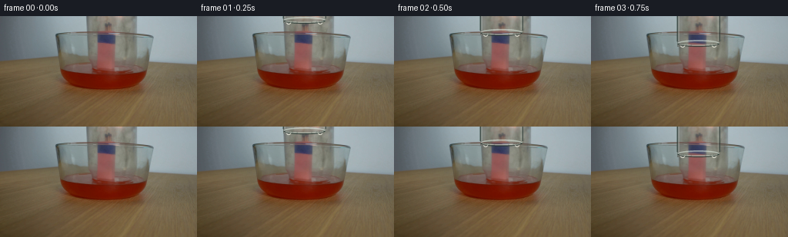
展开代码变化
--- 上一保存版本
+++ 本次保存版本
@@ -1,5 +1,6 @@
from pathlib import Path
+import cv2
import numpy as np
from PIL import Image, ImageDraw, ImageFilter
@@ -22,189 +23,232 @@
return top * (1.0 - fy) + bottom * fy
-def _jar_bounds(bottom):
- # A narrow cylinder centered on the match bundle. Its upper half remains
- # outside the frame while the open mouth descends into the bowl.
- center = 139.5
- half_width = 27.5
- return center, center - half_width, center + half_width, bottom
-
-
-def _glass_warp(base, bottom, frame, contact):
- center, left, right, mouth = _jar_bounds(bottom)
+def _clean_plate(source):
+ """Remove only the narrow photographed glass outlines."""
+ mask = np.zeros((H, W), dtype=np.uint8)
+ # Vertical side walls.
+ mask[0:69, 111:118] = 255
+ mask[0:69, 178:185] = 255
+ # Elliptical mouth rim, split around the central match bundle.
+ mask[61:83, 111:124] = 255
+ mask[61:83, 146:185] = 255
+ clean = cv2.inpaint(source, mask, 3, cv2.INPAINT_TELEA).astype(np.float32)
+
+ # Remove the faint old reflection streaks in the transparent wall.
+ for x0, x1 in ((123, 128), (169, 174)):
+ clean[12:61, x0:x1] = (
+ clean[12:61, x0 - 1 : x0] * 0.5 + clean[12:61, x1 : x1 + 1] * 0.5
+ )
+ return clean
+
+
+def _jar_shape(offset):
+ """The photographed jar, with its mouth moved down by offset pixels."""
+ # Slightly narrower at the lower lip to preserve the original perspective.
+ top_left, top_right = 114.5, 181.5
+ mouth = 74.0 + offset
+ left = top_left + 0.025 * offset
+ right = top_right - 0.025 * offset
+ return left, right, mouth
+
+
+def _glass_warp(base, offset, frame, contact):
+ left, right, mouth = _jar_shape(offset)
+ center = (left + right) * 0.5
out = base.copy()
- y1 = max(0, int(np.ceil(mouth + 1.0)))
- yy, xx = np.mgrid[0:y1, 0:W]
- u = (xx - left) / (right - left)
+ y0 = 0
+ y1 = min(H, max(1, int(np.ceil(mouth + 2))))
+ yy, xx = np.mgrid[y0:y1, 0:W]
+ u = (xx - left) / max(right - left, 1.0)
inside = (u >= 0.0) & (u <= 1.0)
- # Cylindrical glass compresses the view near the wall. The tiny animated
- # component keeps the surface feeling like glass rather than a flat decal.
+ # Subtle cylindrical refraction, fixed to the moving glass surface.
distance = np.abs(u - 0.5) * 2.0
- scale = 1.0 - 0.016 * distance**2 - 0.055 * distance**8
- sample_x = center + (xx - center) * scale
- sample_x += 0.35 * np.sin(np.pi * u + 0.25) * (1.0 - 0.6 * distance)
- sample_x += 0.12 * np.sin(yy * 0.15 + frame * 0.38) * distance
- sample_y = yy + 0.20 * np.sin(np.pi * u) * contact
- warped = _bilinear(base, sample_x, sample_y)
-
- # The glass adds a very slight green-gray cast and a brighter center.
- edge = np.exp(-((u - 0.045) / 0.075) ** 2) + np.exp(
- -((u - 0.955) / 0.075) ** 2
- )
- alpha = (0.012 + 0.026 * edge) * inside
- tint = np.array([184.0, 203.0, 193.0], dtype=np.float32)
+ compression = 1.0 - 0.010 * distance**2 - 0.027 * distance**8
+ sx = center + (xx - center) * compression
+ sx += 0.18 * np.sin(np.pi * u) * (1.0 - 0.55 * distance)
+ sx += 0.08 * np.sin(yy * 0.18 + frame * 0.32) * distance
+ sy = yy + 0.13 * np.sin(np.pi * u) * contact
+ warped = _bilinear(base, sx, sy)
+
+ edge = np.exp(-((u - 0.035) / 0.055) ** 2) + np.exp(
+ -((u - 0.965) / 0.055) ** 2
+ )
+ alpha = (0.007 + 0.018 * edge) * inside
+ tint = np.array([189.0, 204.0, 195.0], dtype=np.float32)
warped = warped * (1.0 - alpha[..., None]) + tint * alpha[..., None]
- out[:y1][inside] = warped[inside]
+ out[y0:y1][inside] = warped[inside]
return out
-def _draw_jar(image, bottom, frame, contact):
- center, left, right, mouth = _jar_bounds(bottom)
+def _draw_jar(image, offset, frame, contact):
+ left, right, mouth = _jar_shape(offset)
scale = 4
canvas = Image.new("RGBA", (W * scale, H * scale), (0, 0, 0, 0))
draw = ImageDraw.Draw(canvas)
- # Broad, faint body reflections. These are blurred before the hard edges
- # are added so the glass reads as a volume at this small resolution.
+ # Long, soft body reflections follow the moving jar.
sheen = Image.new("RGBA", canvas.size, (0, 0, 0, 0))
sd = ImageDraw.Draw(sheen)
- sx = int(round((left + 8.0) * scale))
- sd.rectangle(
- [sx, 0, sx + int(2.0 * scale), int((mouth - 5.0) * scale)],
- fill=(228, 241, 231, 50),
- )
- sx2 = int(round((right - 8.5) * scale))
- sd.rectangle(
- [sx2, 0, sx2 + int(1.5 * scale), int((mouth - 5.0) * scale)],
- fill=(215, 231, 221, 34),
- )
- sheen = sheen.filter(ImageFilter.GaussianBlur(2.2 * scale))
+ x1 = (left + 8.0) * scale
+ x2 = (right - 9.0) * scale
+ sd.line(
+ [(x1, 0), (x1, (mouth - 7.0) * scale)],
+ fill=(225, 239, 230, 36),
+ width=3 * scale,
+ )
+ sd.line(
+ [(x2, 0), (x2, (mouth - 7.0) * scale)],
+ fill=(207, 225, 215, 24),
+ width=3 * scale,
+ )
+ sheen = sheen.filter(ImageFilter.GaussianBlur(2.0 * scale))
canvas = Image.alpha_composite(canvas, sheen)
draw = ImageDraw.Draw(canvas)
- # Side walls. The outer contour is cool and dark; the inner glint is pale.
- xl = left * scale
- xr = right * scale
- ym = max(0, (mouth - 5.0) * scale)
- draw.line([(xl, 0), (xl, ym)], fill=(48, 65, 60, 145), width=2 * scale)
+ # Fine side contours and a cooler inner edge.
+ ym = max(0, (mouth - 6.0) * scale)
+ xl, xr = left * scale, right * scale
+ draw.line([(xl, 0), (xl, ym)], fill=(63, 77, 71, 135), width=2 * scale)
draw.line(
[(xl + 1.8 * scale, 0), (xl + 1.8 * scale, ym)],
- fill=(224, 238, 228, 105),
- width=1 * scale,
- )
- draw.line([(xr, 0), (xr, ym)], fill=(48, 63, 58, 135), width=2 * scale)
+ fill=(222, 235, 225, 82),
+ width=1 * scale,
+ )
+ draw.line([(xr, 0), (xr, ym)], fill=(59, 74, 68, 128), width=2 * scale)
draw.line(
- [(xr - 1.8 * scale, 0), (xr - 1.8 * scale, ym)],
- fill=(214, 230, 220, 80),
- width=1 * scale,
- )
-
- # Open lower rim: a shallow ellipse with a heavier front bead.
- rim_top = mouth - 7.0
- outer = [left * scale, rim_top * scale, right * scale, (mouth + 2.0) * scale]
+ [(xr - 1.7 * scale, 0), (xr - 1.7 * scale, ym)],
+ fill=(214, 228, 218, 66),
+ width=1 * scale,
+ )
+
+ # Mouth: shallow ellipse with a dark front bead and a wet upper glint.
+ rim_top = mouth - 5.5
+ outer = [left * scale, rim_top * scale, right * scale, (mouth + 1.4) * scale]
inner = [
- (left + 3.0) * scale,
- (rim_top + 1.7) * scale,
- (right - 3.0) * scale,
- (mouth - 0.5) * scale,
+ (left + 2.2) * scale,
+ (rim_top + 1.25) * scale,
+ (right - 2.2) * scale,
+ (mouth - 0.4) * scale,
]
- draw.ellipse(outer, fill=(113, 128, 118, 20), outline=(55, 70, 65, 120), width=1 * scale)
- draw.arc(outer, 180, 360, fill=(218, 232, 222, 150), width=2 * scale)
- draw.arc(outer, 0, 180, fill=(50, 65, 59, 190), width=3 * scale)
- draw.arc(inner, 178, 362, fill=(218, 232, 222, 75), width=1 * scale)
-
- # Stronger wet highlight on the front lip, broken into two clean glints.
+ draw.ellipse(
+ outer,
+ fill=(116, 131, 121, 15),
+ outline=(65, 79, 72, 105),
+ width=1 * scale,
+ )
+ draw.arc(outer, 180, 360, fill=(220, 232, 222, 132), width=1 * scale)
+ draw.arc(outer, 0, 180, fill=(58, 72, 65, 172), width=2 * scale)
+ draw.arc(inner, 176, 364, fill=(224, 236, 225, 65), width=1 * scale)
draw.arc(
[
- (left + 2.0) * scale,
- (rim_top + 3.0) * scale,
- (right - 2.0) * scale,
- (mouth + 0.4) * scale,
+ (left + 1.7) * scale,
+ (rim_top + 2.3) * scale,
+ (right - 1.7) * scale,
+ (mouth - 0.4) * scale,
],
12,
168,
- fill=(239, 244, 231, 165),
- width=1 * scale,
- )
- for gx in (left + 7.0, right - 7.0):
+ fill=(238, 243, 230, 148),
+ width=1 * scale,
+ )
+ for gx in (left + 6.0, right - 6.0):
draw.arc(
- [(gx - 3.0) * scale, (mouth - 2.5) * scale, (gx + 3.0) * scale, (mouth + 2.8) * scale],
- 10,
- 170,
- fill=(249, 248, 233, 205),
+ [
+ (gx - 2.4) * scale,
+ (mouth - 2.2) * scale,
+ (gx + 2.4) * scale,
+ (mouth + 1.1) * scale,
+ ],
+ 12,
+ 168,
+ fill=(247, 247, 231, 184),
width=1 * scale,
)
+ # Small moving vertical reflection within the left wall.
+ glint_y = 18.0 + 11.0 * np.sin(frame * 0.34)
+ draw.line(
+ [
+ ((left + 3.2) * scale, (glint_y - 8.0) * scale),
+ ((left + 3.2) * scale, (glint_y + 10.0) * scale),
+ ],
+ fill=(235, 242, 231, 72),
+ width=1 * scale,
+ )
+
overlay = np.asarray(
canvas.resize((W, H), Image.Resampling.LANCZOS), dtype=np.float32
)
alpha = overlay[..., 3:4] / 255.0
out = image * (1.0 - alpha) + overlay[..., :3] * alpha
- # Once the mouth crosses the liquid surface, a red meniscus climbs both
- # walls. It fades as the jar settles, leaving a quiet contact line.
- if contact > 0.0:
+ # Liquid contact: red climbs the rim briefly, then settles into a fine line.
+ if contact > 0:
ripple = Image.new("RGBA", canvas.size, (0, 0, 0, 0))
rd = ImageDraw.Draw(ripple)
- fade = 1.0 - 0.35 * min(1.0, max(0.0, (frame - 9) / 9.0))
+ settle = 1.0 - 0.45 * min(1.0, max(0.0, (frame - 9) / 10.0))
for side in (-1, 1):
x = left if side < 0 else right
rd.arc(
[
- (x - 5.0) * scale,
- (79.0 - 3.5) * scale,
- (x + 5.0) * scale,
- (79.0 + 4.0) * scale,
+ (x - 4.0) * scale,
+ (78.3 - 2.3) * scale,
+ (x + 4.0) * scale,
+ (78.3 + 3.1) * scale,
],
- 182 if side < 0 else 358,
- 358 if side < 0 else 178,
- fill=(246, 105, 63, int(105 * contact * fade)),
+ 184 if side < 0 else 356,
+ 356 if side < 0 else 176,
+ fill=(242, 105, 65, int(92 * contact * settle)),
width=1 * scale,
)
- ripple = ripple.filter(ImageFilter.GaussianBlur(0.45 * scale))
+ ripple = ripple.filter(ImageFilter.GaussianBlur(0.38 * scale))
ro = np.asarray(ripple.resize((W, H), Image.Resampling.LANCZOS), dtype=np.float32)
ra = ro[..., 3:4] / 255.0
out = out * (1.0 - ra) + ro[..., :3] * ra
-
return out
-def _subtle_flame_response(image, bottom, frame):
- # The bundle remains the visual focus. A low-amplitude amber pulse at the
- # match heads is visible through the glass without inventing a large flame.
+def _flame_response(image, frame, cover):
+ """A tiny warm pulse at the heads, strongest before they are enclosed."""
out = image.astype(np.float32)
yy, xx = np.mgrid[0:H, 0:W]
- pulse = 0.018 + 0.010 * (0.5 + 0.5 * np.sin(frame * 1.55 + 0.4))
- glow = np.exp(-(((xx - 136.0) / 10.0) ** 2 + ((yy - 67.0) / 8.0) ** 2))
- out += glow[..., None] * np.array([255.0, 106.0, 34.0], dtype=np.float32) * pulse
+ pulse = (0.014 + 0.007 * (0.5 + 0.5 * np.sin(frame * 1.42))) * (
+ 1.0 - 0.45 * cover
+ )
+ glow = np.exp(-(((xx - 135.0) / 9.0) ** 2 + ((yy - 68.0) / 7.0) ** 2))
+ out += glow[..., None] * np.array([255.0, 111.0, 36.0], dtype=np.float32) * pulse
return np.clip(out, 0, 255)
-def _mouth_for_frame(frame):
+def _offset_for_frame(frame):
if frame == 0:
- return None, 0.0
- # Enter, descend, and settle by the third second.
+ return 0.0, 0.0
+ # Hold the opening pose, descend decisively, then settle with a tiny bounce.
if frame <= 12:
- t = (frame - 1) / 11.0
+ t = np.clip((frame - 1) / 11.0, 0.0, 1.0)
eased = 1.0 - (1.0 - t) ** 2
- mouth = 8.0 + 90.8 * eased
+ offset = 15.5 * eased
else:
- mouth = 98.8 + 0.10 * np.sin((frame - 12) * 0.8) * np.exp(-(frame - 12) / 4.0)
- contact = float(np.clip((mouth - 80.0) / 12.0, 0.0, 1.0))
- return mouth, contact
+ offset = 15.5 + 0.22 * np.sin((frame - 12) * 1.3) * np.exp(
+ -(frame - 12) / 3.0
+ )
+ contact = float(np.clip((74.0 + offset - 79.5) / 2.0, 0.0, 1.0))
+ cover = float(np.clip(offset / 12.0, 0.0, 1.0))
+ return offset, contact, cover
def generate():
- source = np.asarray(Image.open(HERE / "first_frame.png").convert("RGB"), dtype=np.float32)
+ source = np.asarray(Image.open(HERE / "first_frame.png").convert("RGB"), dtype=np.uint8)
+ clean = _clean_plate(source)
frames = np.empty((N, H, W, 3), dtype=np.uint8)
- frames[0] = source.astype(np.uint8)
+ frames[0] = source
for frame in range(1, N):
- bottom, contact = _mouth_for_frame(frame)
- image = _glass_warp(source, bottom, frame, contact)
- image = _subtle_flame_response(image, bottom, frame)
- image = _draw_jar(image, bottom, frame, contact)
+ offset, contact, cover = _offset_for_frame(frame)
+ image = _glass_warp(clean, offset, frame, contact)
+ image = _flame_response(image, frame, cover)
+ image = _draw_jar(image, offset, frame, contact)
frames[frame] = np.clip(np.rint(image), 0, 255).astype(np.uint8)
artifact_io.save(frames, HERE)
候选 04播放与检查图

候选 05播放与检查图
点击播放 · 原生 RGB 像素
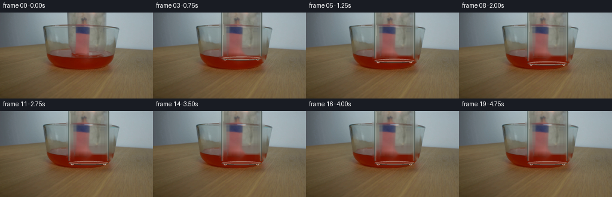
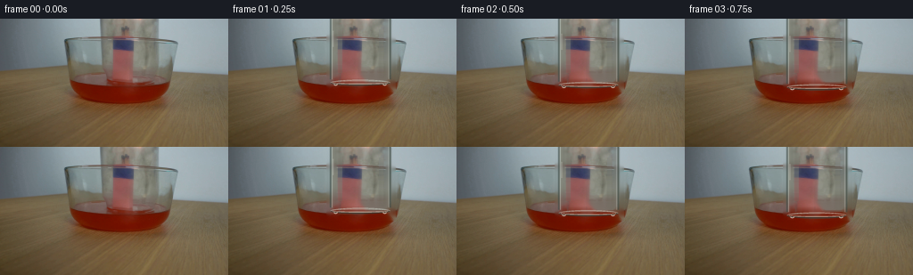
展开代码变化
--- 上一保存版本
+++ 本次保存版本
@@ -27,18 +27,28 @@
"""Remove only the narrow photographed glass outlines."""
mask = np.zeros((H, W), dtype=np.uint8)
# Vertical side walls.
- mask[0:69, 111:118] = 255
- mask[0:69, 178:185] = 255
+ mask[0:69, 110:122] = 255
+ mask[0:69, 176:188] = 255
# Elliptical mouth rim, split around the central match bundle.
- mask[61:83, 111:124] = 255
- mask[61:83, 146:185] = 255
- clean = cv2.inpaint(source, mask, 3, cv2.INPAINT_TELEA).astype(np.float32)
+ mask[61:83, 110:125] = 255
+ mask[61:83, 145:188] = 255
+ clean = cv2.inpaint(source, mask, 4, cv2.INPAINT_TELEA).astype(np.float32)
# Remove the faint old reflection streaks in the transparent wall.
for x0, x1 in ((123, 128), (169, 174)):
clean[12:61, x0:x1] = (
clean[12:61, x0 - 1 : x0] * 0.5 + clean[12:61, x1 : x1 + 1] * 0.5
)
+
+ # A thin part of the old rim crosses the central bundle. Bridge it from
+ # the bundle colors immediately above and below instead of inpainting the
+ # entire subject.
+ for x in range(124, 147):
+ upper = source[65, x].astype(np.float32)
+ lower = source[74, x].astype(np.float32)
+ for y in range(67, 73):
+ t = (y - 66) / 8.0
+ clean[y, x] = upper * (1.0 - t) + lower * t
return clean
可观测工具轨迹
实际执行的命令与返回图片。
命令 1exit 0
/bin/bash -c "pwd && rg --files -g 'prompt.txt' -g 'GENERATION_RULES.md' -g '*.py' -g '*.sh' -g '*.json' | head -200"
命令 2exit 0
/bin/bash -c "sed -n '1,240p' prompt.txt"
命令 3exit 0
/bin/bash -c "sed -n '1,300p' GENERATION_RULES.md"
命令 4exit 0
/bin/bash -c 'ls -lah'
命令 5exit 0
/bin/bash -c "sed -n '1,260p' artifact_io.py && sed -n '1,260p' player_template.html"
命令 6exit 0
/bin/bash -c "python - <<'PY'
from PIL import Image, ImageEnhance
im=Image.open('first_frame.png').convert('RGB')
im.resize((1024,576),Image.Resampling.NEAREST).save('.tmp/first_nearest.png')
im.resize((1024,576),Image.Resampling.LANCZOS).save('.tmp/first_lanczos.png')
ImageEnhance.Contrast(im).enhance(1.6).resize((1024,576),Image.Resampling.LANCZOS).save('.tmp/first_contrast.png')
PY"命令 7exit 0
/bin/bash -c "python - <<'PY'
from PIL import Image
im=Image.open('first_frame.png')
im.crop((105,0,220,115)).resize((690,690),Image.Resampling.NEAREST).save('.tmp/crop.png')
PY"命令 8exit 0
/bin/bash -c "python - <<'PY'
from PIL import Image, ImageDraw, ImageFont
im=Image.open('first_frame.png').convert('RGB').resize((1024,576),Image.Resampling.LANCZOS)
d=ImageDraw.Draw(im)
for x in range(0,257,16):
d.line((x*4,0,x*4,576), fill=(255,255,255), width=1)
d.text((x*4+2,2),str(x),fill=(255,255,255))
for y in range(0,145,8):
d.line((0,y*4,1024,y*4), fill=(255,255,255), width=1)
d.text((2,y*4+2),str(y),fill=(255,255,255))
im.save('.tmp/grid.png')
PY"命令 9exit 0
/bin/bash -c "python - <<'PY' import importlib.util for p in ['numpy','PIL','cv2','scipy','skimage','imageio','matplotlib']: print(p, bool(importlib.util.find_spec(p))) PY"
命令 10exit 0
/bin/bash -c "python - <<'PY'
from PIL import Image, ImageEnhance, ImageFilter
im=Image.open('first_frame.png').convert('RGB')
# upscale crop with sharpen + contrast
c=im.crop((90,0,190,105)).resize((800,840),Image.Resampling.LANCZOS)
c=ImageEnhance.Contrast(c).enhance(2.0)
c=ImageEnhance.Sharpness(c).enhance(2.0)
c.save('.tmp/jar_detail.png')
# edges
import cv2, numpy as np
arr=np.array(im)
g=cv2.cvtColor(arr,cv2.COLOR_RGB2GRAY)
e=cv2.Canny(g,20,55)
e=cv2.dilate(e,np.ones((2,2),np.uint8),iterations=1)
cv2.imwrite('.tmp/edges.png',e)
PY"命令 11exit 0
/bin/bash -c "python - <<'PY'
from PIL import Image,ImageDraw
im=Image.open('first_frame.png').convert('RGB')
c=im.crop((60,40,210,120)).resize((1200,640),Image.Resampling.NEAREST)
d=ImageDraw.Draw(c)
for x in range(60,211,5):
X=(x-60)*8
d.line((X,0,X,640),fill=(255,255,255),width=1)
if x%10==0:d.text((X+2,2),str(x),fill=(255,255,255))
for y in range(40,121,5):
Y=(y-40)*8
d.line((0,Y,1200,Y),fill=(255,255,255),width=1)
if y%10==0:d.text((2,Y+2),str(y),fill=(255,255,255))
c.save('.tmp/grid2.png')
PY"命令 12exit 0
/bin/bash -c "python - <<'PY'
from PIL import Image
import numpy as np
im=np.array(Image.open('first_frame.png').convert('RGB'))
for x,y in [(128,40),(128,60),(128,70),(128,80),(128,90),(128,100),(140,40),(140,70),(150,80),(160,80),(170,80),(120,60),(100,80),(100,100),(130,110),(180,100)]:
print((x,y),im[y,x].tolist())
PY"命令 13exit 0
/bin/bash -c "python - <<'PY'
import cv2, numpy as np
im=cv2.imread('first_frame.png')
for x in [72,78,82,88,92,96,100,110,120,125,130,135,140,150,160,170,180,185,190,195,200]:
print(x, im[72,x].tolist(), im[40,x].tolist())
PY"命令 14exit 0
/bin/bash -c "python - <<'PY'
import cv2, numpy as np
im=cv2.imread('first_frame.png')
# print selected columns/rows with BGR to RGB
for y in [35,40,45,50,55,60,65,70,75,80,85,90,95,100,105]:
print('y',y,[(x,im[y,x][::-1].tolist()) for x in [80,85,90,95,100,105,110,115,120,125,130,135,140,145,150,155,160,165,170,175,180]])
PY"命令 15exit 0
/bin/bash -c "python - <<'PY'
from PIL import Image
im=Image.open('first_frame.png')
im.crop((55,25,215,115)).resize((1280,720),Image.Resampling.NEAREST).save('.tmp/scene_nearest.png')
PY"命令 16exit 0
/bin/bash -c "python - <<'PY'
from PIL import Image, ImageEnhance
im=Image.open('first_frame.png').convert('RGB')
c=im.crop((105,78,202,108)).resize((1164,360),Image.Resampling.NEAREST)
c=ImageEnhance.Contrast(c).enhance(1.8)
c.save('.tmp/base_detail.png')
PY"命令 17exit 0
/bin/bash -c "python - <<'PY'
from PIL import Image
import cv2, numpy as np
im=cv2.imread('first_frame.png')
g=cv2.cvtColor(im,cv2.COLOR_BGR2GRAY)
e=cv2.Canny(g,10,35)
e=cv2.dilate(e,np.ones((1,1),np.uint8))
crop=e[0:115,70:210]
Image.fromarray(crop).resize((1120,920),Image.Resampling.NEAREST).save('.tmp/edges_crop.png')
# Laplacian?
lap=cv2.Laplacian(g,cv2.CV_32F,ksize=3)
lap=np.clip(np.abs(lap)*2,0,255).astype(np.uint8)
Image.fromarray(lap[0:115,70:210]).resize((1120,920),Image.Resampling.NEAREST).save('.tmp/lap_crop.png')
PY"命令 18exit 0
/bin/bash -c 'python generate.py'
命令 19exit 0
/bin/bash -c "wc -l generate.py && sed -n '1,40p' generate.py"
命令 20exit 0
/bin/bash -c 'python generate.py'
命令 21exit 0
/bin/bash -c "python - <<'PY'
import cv2, numpy as np
from PIL import Image
im=cv2.imread('first_frame.png')
mask=np.zeros(im.shape[:2],np.uint8)
# side walls only above liquid
mask[0:68,112:118]=255
mask[0:68,178:184]=255
# mouth rim, excluding central bundle
mask[61:83,112:124]=255
mask[61:83,146:184]=255
# faint horizontal/elliptic rim across non-bundle zones
mask[64:70,112:126]=255
mask[64:70,146:184]=255
out=cv2.inpaint(im,mask,3,cv2.INPAINT_TELEA)
cv2.imwrite('.tmp/clean_plate.png',out)
Image.fromarray(cv2.cvtColor(out,cv2.COLOR_BGR2RGB)).resize((1024,576),Image.Resampling.NEAREST).save('.tmp/clean_plate_big.png')
PY"命令 22exit 0
/bin/bash -c 'python generate.py'
命令 23exit 0
/bin/bash -c "python - <<'PY'
import numpy as np
from PIL import Image
src=np.array(Image.open('first_frame.png').convert('RGB'))
f0=np.array(Image.open('frames/00.png').convert('RGB'))
print('first_frame exact:',np.array_equal(src,f0))
for i in [1,2,3,4,5,6,7,8,9,10,11,12,13,14,15,16,17,18,19]:
f=np.array(Image.open(f'frames/{i:02d}.png').convert('RGB')).astype(int)
print(i,'changed',np.count_nonzero(np.any(f"'!=src,axis=2)),'"'MAE',np.abs(f-src.astype(int)).mean())
PY"命令 24exit 0
/bin/bash -c "python - <<'PY'
from PIL import Image
for i in [0,1,4,7,10,13,19]:
im=Image.open(f'frames/{i:02d}.png')
im.crop((100,0,195,110)).resize((570,660),Image.Resampling.NEAREST).save(f'.tmp/f{i:02d}_crop.png')
PY"命令 25exit 0
/bin/bash -c "python - <<'PY'
import numpy as np, cv2
from PIL import Image
src=np.array(Image.open('first_frame.png').convert('RGB')).astype(np.float32)
f19=np.array(Image.open('frames/19.png').convert('RGB')).astype(np.float32)
d=np.abs(f19-src).mean(axis=2)
d=(np.clip(d*3,0,255)).astype(np.uint8)
cv2.imwrite('.tmp/diff19.png',cv2.cvtColor(d,cv2.COLOR_RGB2BGR))
# brighten and edge overlay of final
im=Image.open('frames/19.png').crop((100,0,195,110)).resize((950,1100),Image.Resampling.NEAREST)
im.save('.tmp/f19_detail.png')
PY"命令 26exit 0
/bin/bash -c "python - <<'PY'
import cv2,numpy as np
im=cv2.imread('first_frame.png')
hsv=cv2.cvtColor(im,cv2.COLOR_BGR2HSV)
s=hsv[:,:,1]; v=hsv[:,:,2]
for y in range(58,75):
vals=[]
for x in range(112,186):
if s[y,x]>=45: vals.append(x)
if vals: print(y,min(vals),max(vals),len(vals))
PY"命令 27exit 0
/bin/bash -c "python - <<'PY'
import cv2,numpy as np
im=cv2.imread('first_frame.png')
# analyze horizontal scanline gradients at mouth
for y in range(58,80):
g=cv2.cvtColor(im,cv2.COLOR_BGR2GRAY)[y].astype(int)
# strongest contiguous changes 112-185
d=np.abs(np.diff(g[108:190]))
ids=np.argsort(d)[-8:][::-1]
print(y,[(int(i+108),int(d[i]),int(g[i+108]),int(g[i+109])) for i in ids[:5]])
PY"命令 28exit 0
/bin/bash -c "python - <<'PY'
import cv2,numpy as np
im=cv2.imread('first_frame.png')
g=cv2.cvtColor(im,cv2.COLOR_BGR2GRAY).astype(float)
# smooth along x and inspect second differences
for y in [62,63,64,65,66,67,68,69,70]:
a=g[y,108:190]
a=np.convolve(a,np.ones(5)/5,'same')
d2=np.abs(np.diff(a,2))
ids=np.argsort(d2)[-10:][::-1]
print(y,[(int(i+109),round(d2[i],1)) for i in ids[:8]])
PY"命令 29exit 0
/bin/bash -c "python - <<'PY'
import cv2,numpy as np
im=cv2.imread('first_frame.png')
mask=np.zeros(im.shape[:2],np.uint8)
mask[0:68,116:122]=255
mask[0:68,176:183]=255
mask[61:83,116:124]=255
mask[61:83,146:183]=255
out=cv2.inpaint(im,mask,4,cv2.INPAINT_TELEA)
cv2.imwrite('.tmp/clean2.png',out)
PY"命令 30exit 0
/bin/bash -c 'ls -lah && find frames -maxdepth 1 -type f | sort | tail -5'
命令 31exit 0
/bin/bash -c "python - <<'PY'
import json, os
from pathlib import Path
import numpy as np
from PIL import Image
p=Path('pixels.npz')
print('pixels',p.exists(), p.stat().st_size if p.exists() else None)
print('inspection',Path('inspection.png').exists(),Path('inspection.png').stat().st_size if Path('inspection.png').exists() else None)
print('frames',len(list(Path('frames').glob('*.png'))))
if p.exists():
z=np.load(p)
print('pixels shape/dtype',z['pixels'].shape,z['pixels'].dtype)
src=np.array(Image.open('first_frame.png').convert('RGB'))
f0=np.array(Image.open('frames/00.png').convert('RGB'))
print('first exact',np.array_equal(src,f0), 'shape',src.shape)
PY"命令 32exit 0
/bin/bash -c "git status --short 2>/dev/null || true && wc -l generate.py && sed -n '1,320p' generate.py"
命令 33exit 0
/bin/bash -c "python - <<'PY'
from pathlib import Path
import numpy as np
from PIL import Image
import generate
src=np.asarray(Image.open('first_frame.png').convert('RGB'),dtype=np.uint8)
clean=generate._clean_plate(src)
Image.fromarray(np.clip(np.rint(clean),0,255).astype(np.uint8)).save('.tmp/current_clean.png')
Image.fromarray(np.clip(np.rint(clean),0,255).astype(np.uint8)).crop((100,45,195,95)).resize((760,400),Image.Resampling.NEAREST).save('.tmp/current_clean_crop.png')
PY"命令 34exit 0
/bin/bash -c "python - <<'PY'
from PIL import Image
import numpy as np
import generate
src=np.asarray(Image.open('first_frame.png').convert('RGB'),dtype=np.uint8)
clean=generate._clean_plate(src)
Image.fromarray(np.clip(np.rint(clean),0,255).astype(np.uint8)).crop((100,45,195,95)).resize((760,400),Image.Resampling.NEAREST).save('.tmp/clean_fix_crop.png')
PY"命令 35exit 0
/bin/bash -c "python - <<'PY'
import cv2,numpy as np
im=cv2.imread('first_frame.png')
# compare gradient of columns around suspected wall edges for y ranges
for x in range(105,191):
g=np.abs(np.diff(cv2.cvtColor(im,cv2.COLOR_BGR2GRAY)[5:60].astype(float),axis=1)).mean()
if g>2: print(x,round(g,2))
PY"命令 36exit 0
/bin/bash -c "python - <<'PY'
import cv2,numpy as np
im=cv2.imread('first_frame.png')
g=cv2.cvtColor(im,cv2.COLOR_BGR2GRAY).astype(float)
for x in range(105,191):
d=np.abs(g[5:60,x]-g[5:60,x-1]).mean()
if d>0.3: print(x,round(d,2))
PY"命令 37exit 0
/bin/bash -c "python - <<'PY'
from PIL import Image,ImageDraw
im=Image.open('first_frame.png').convert('RGB').resize((1024,576),Image.Resampling.LANCZOS)
d=ImageDraw.Draw(im)
for x in range(100,196):
X=x*4
d.line((X,0,X,576),fill=(255,255,255),width=1)
if x%2==0:d.text((X+1,2),str(x),fill=(255,255,255))
for y in range(0,110,5):
Y=y*4
d.line((0,Y,1024,Y),fill=(255,255,255),width=1)
d.text((2,Y+2),str(y),fill=(255,255,255))
im.crop((400,0,800,440)).save('.tmp/precise_grid.png')
PY"命令 38exit 0
/bin/bash -c 'python generate.py'
命令 39exit 0
/bin/bash -c "python - <<'PY'
from PIL import Image
import numpy as np
im=Image.open('frames/19.png')
im.crop((105,55,185,90)).resize((960,420),Image.Resampling.NEAREST).save('.tmp/final_crop.png')
PY"命令 40exit 0
/bin/bash -c "python - <<'PY'
from PIL import Image
import numpy as np
for i in range(20):
a=np.asarray(Image.open(f'frames/{i:02d}.png').convert('RGB'))
assert a.shape==(144,256,3),a.shape
print('all frame shapes valid')
src=np.asarray(Image.open('first_frame.png').convert('RGB'))
f0=np.asarray(Image.open('frames/00.png').convert('RGB'))
print('frame00 exact',np.array_equal(src,f0))
z=np.load('pixels.npz')['pixels']
print('packed shape',z.shape,z.dtype)
# decode spot-check first/last
for idx in (0,19):
v=z[:,:,idx]
rgb=np.stack([(v>>16)&255,(v>>8)&255,v&255],axis=-1).astype(np.uint8)
print(idx,np.array_equal(rgb,np.asarray(Image.open(f'frames/{idx:02d}.png').convert('RGB'))))
PY"命令 41exit 0
/bin/bash -c "python - <<'PY'
from PIL import Image
import numpy as np
for i in [0,1,4,8,12,16,19]:
a=np.asarray(Image.open(f'frames/{i:02d}.png').convert('RGB')).astype(int)
# central crop, report mean and bright pixels for basic content
c=a[45:105,100:195]
print(i,'mean',round(float(c.mean()),2),'max',int(c.max()),'bright',int((c.max(axis=2)>180).sum()))
PY"视觉工具实际返回图片 1
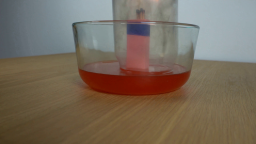
视觉工具实际返回图片 2
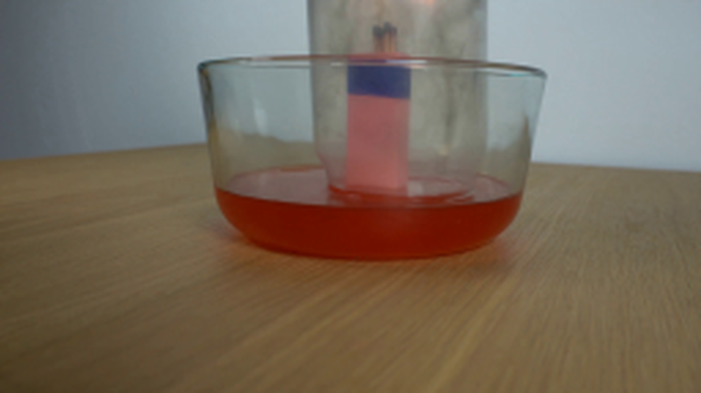
视觉工具实际返回图片 3
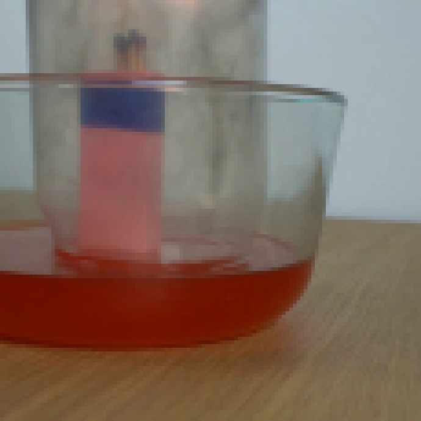
视觉工具实际返回图片 4
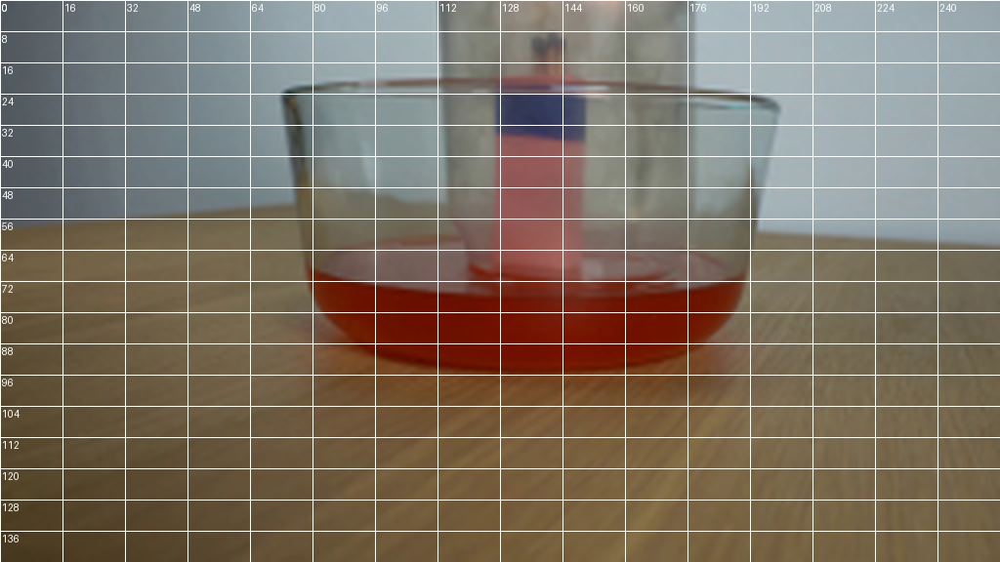
视觉工具实际返回图片 5
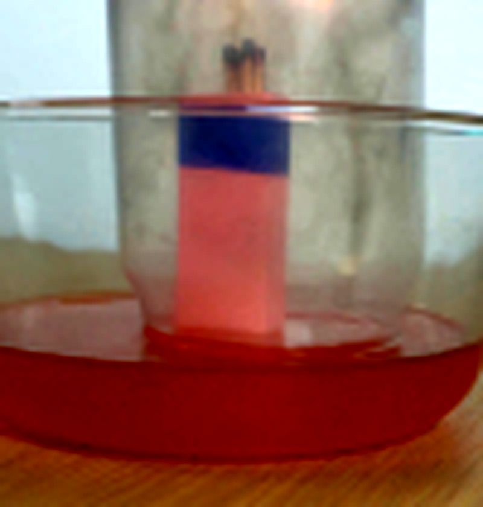
视觉工具实际返回图片 6
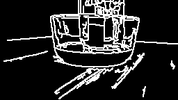
视觉工具实际返回图片 7
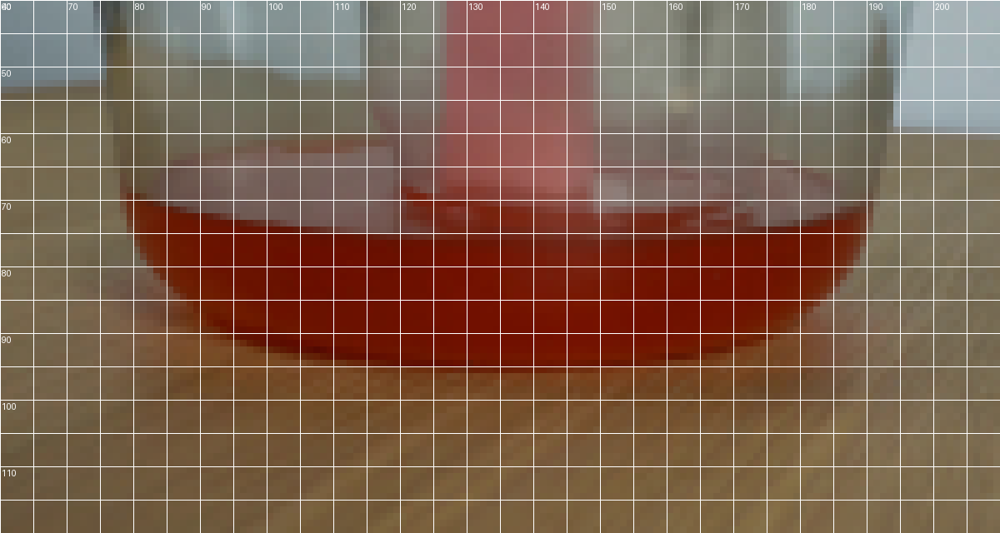
视觉工具实际返回图片 8
视觉工具实际返回图片 9
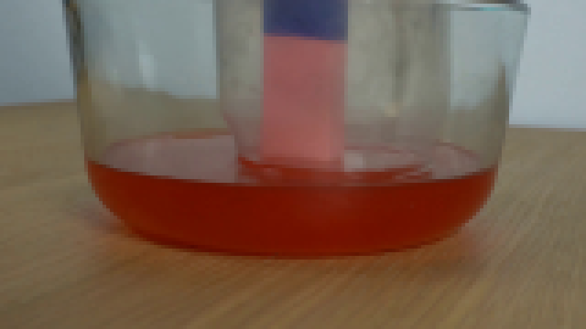
视觉工具实际返回图片 10
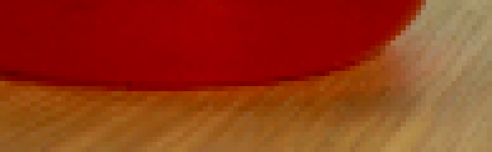
视觉工具实际返回图片 11
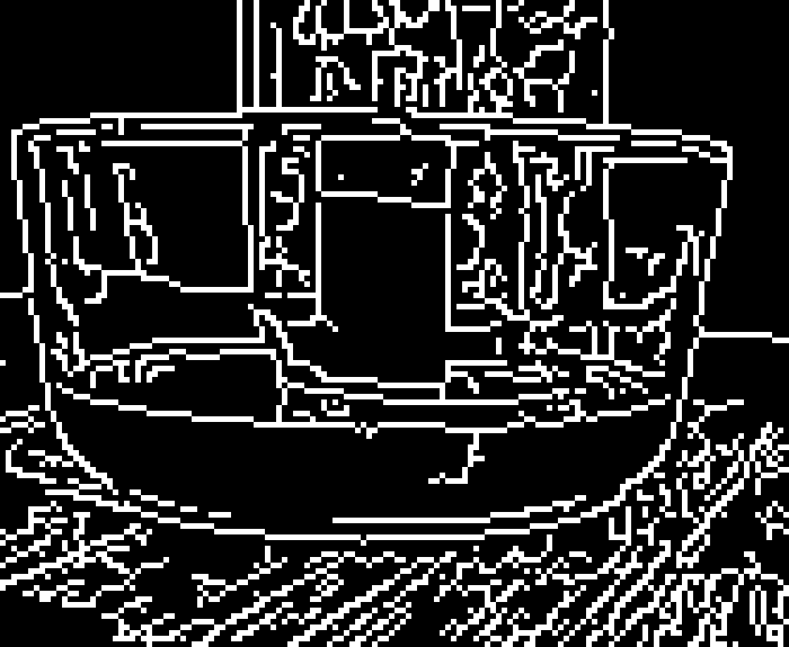
视觉工具实际返回图片 12

视觉工具实际返回图片 13
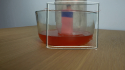
视觉工具实际返回图片 14
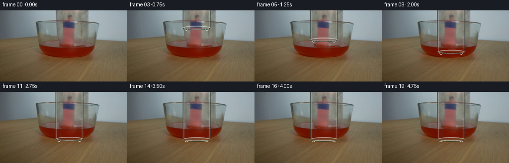
视觉工具实际返回图片 15
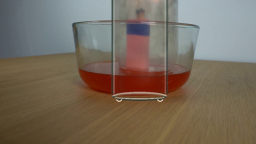
视觉工具实际返回图片 16

视觉工具实际返回图片 17
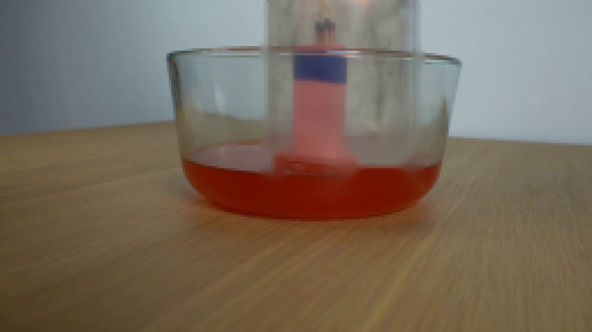
视觉工具实际返回图片 18
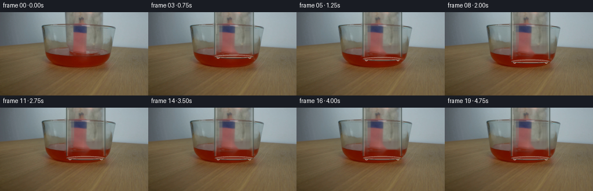
视觉工具实际返回图片 19
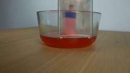
视觉工具实际返回图片 20
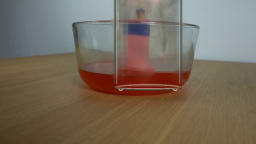
视觉工具实际返回图片 21
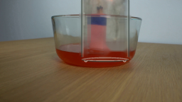
视觉工具实际返回图片 22
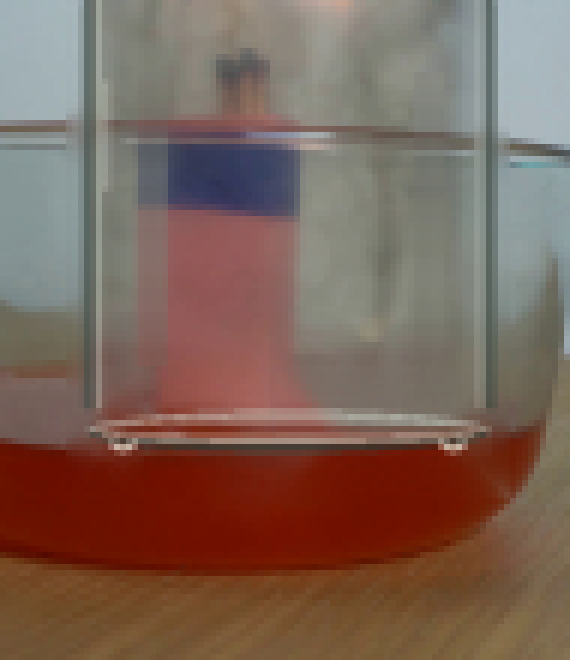
视觉工具实际返回图片 23
视觉工具实际返回图片 24
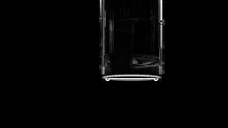
视觉工具实际返回图片 25
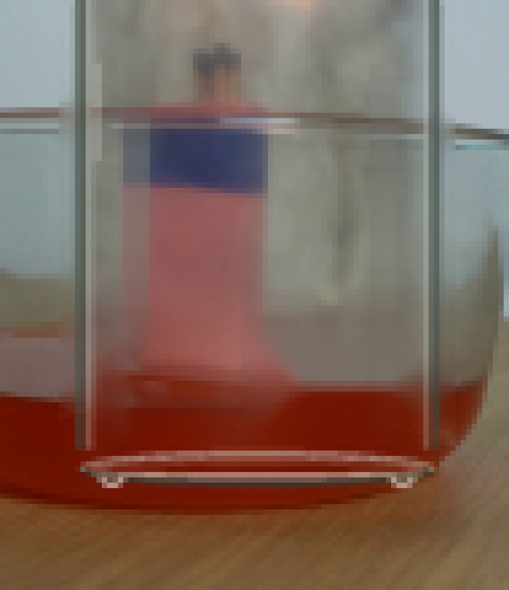
视觉工具实际返回图片 26
视觉工具实际返回图片 27
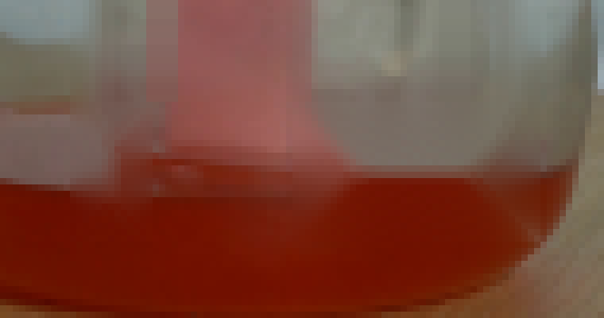
视觉工具实际返回图片 28
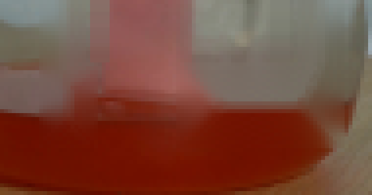
视觉工具实际返回图片 29
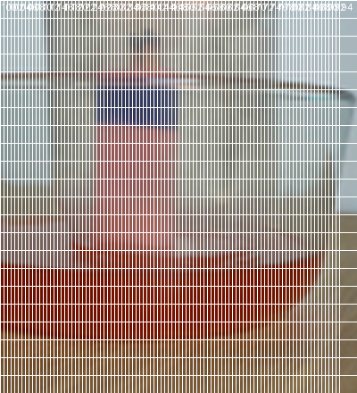
视觉工具实际返回图片 30
视觉工具实际返回图片 31

视觉工具实际返回图片 32
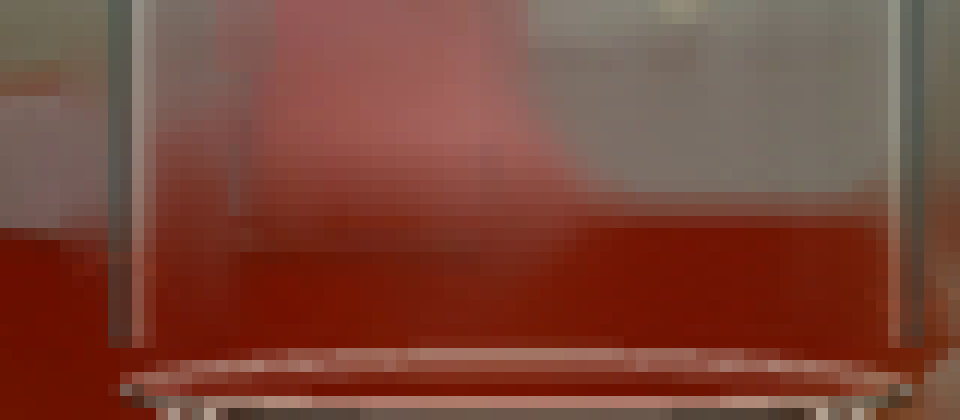
保存候选 5 份；完成命令 41 次；可验证图片返回 32 张。原始 API 响应与完整日志保留在本地。